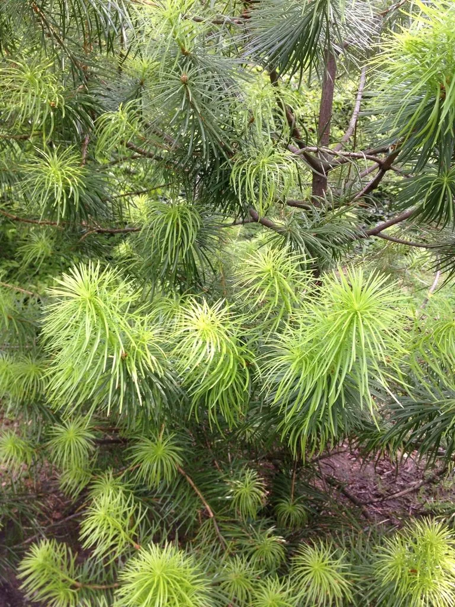

乔木 · 植物界
银杉 Cathaya argyrophylla

松科银杉属常绿乔木，中国特有的孑遗植物，条形叶背面有两条银白色气孔带，风起时银光闪闪，被誉为植物活化石。
- 分类
- 门裸子植物门纲松纲目松柏目科松科属银杉属
- 栖息环境
- 海拔 700–1800 米的石灰岩山地与山脊，喜云雾湿润、耐寒耐瘠
- 地理分布
- 中国广西龙胜、四川金佛山、湖南新宁、贵州道真等地，为中国特有
- 保护级别
- 国家一级重点保护野生植物；IUCN 暂无评估
物种志
银杉为松科银杉属常绿乔木，高可达二十米，树干通直，树皮暗灰色、呈不规则薄片剥落。叶条形，螺旋状排列，长四至六厘米，表面深绿色，背面有两条银白色的气孔带，远望如银线。雌雄同株，雄球花黄色，雌球花绿色，花期五月；球果卵圆形，成熟时淡褐色，果期翌年十月。
银杉是中国特有的孑遗植物，分布于广西龙胜、四川金佛山、湖南新宁、贵州道真等地，多生于海拔七百至一千八百米的石灰岩山地和山脊。它喜温暖湿润、云雾缭绕的环境，耐寒、耐瘠薄，适宜石灰质土壤，生长缓慢。银杉对研究松科植物的系统发育和古气候具有重要意义，被称为植物活化石；树姿优美，可作观赏树。由于分布区狭窄、繁殖困难，被列为国家一级重点保护野生植物。
形态与习性
- 株高可达 20 m，树干通直
- 花期5 月，雄球花黄色
- 果期翌年 10 月，球果淡褐色
- 光照喜光，幼树稍耐侧阴
- 水分喜云雾湿润，耐寒
- 土壤石灰质山地薄土
- 主要用途科研与观赏，活化石植物
趣味知识
- 银杉的叶背有两条银白色气孔带，山风吹动时整片林冠银光闪烁。
- 它是第三纪残遗植物，曾被植物学界认为早已灭绝，二十世纪才在广西被发现。
- 银杉野生个体仅数千株，分布点零散，被列为国家一级保护植物。